操作系统
一、操作系统的概念
操作系统的概念
操作系统是一个协调、管理、控制计算机硬件资源给应用程序使用的一种控制程序
计算机三层体系
- 应用程序：图形界面，命令解释器
- 操作系统：windows操作系统 linux
- 计算机硬件（cpu、内存、硬盘）
操作系统与应用程序的区别
- 为了方便上层的应用程序开发（操作系统把复杂的硬件控制的代码都给写好了，然后对上层提供简单的功能）
- 操作系统是负责控制硬件的程序，给上层应用程序来调用
- 应用程序是给用户使用的程序
进程与程序
- 程序：就是一个或者一系列代码文件—》静态
- 进程：就是一个程序的运行过程——–》动态
- 进程代表的是程序的运行过程，而负责运行整个过程是操作系统，所以进程是操作系统的最核心的概念
操作系统的构成
操作系统由两部分构成
- 系统调用接口：为上层的应用程序提供的一系列的功能
- 内核：负责控制硬件的运行的
操作系统的两种工作状态
- 用户态：执行的是系统调用接口层的代码，负责跟上层的应用程序打交道
- 内核态：执行的是内核某部分代码，负责跟底层的硬件打交道

操作系统的整个运行过程会频繁发生用户态与内核态的切换
操作系统启动之后，应用程序又是如何启动/运行的？
操作系统接到启动程序的指令
操作系统会控制硬件来运行某个应用程序
操作系统控制硬盘把程序的代码文件读入内存
操作系统控制cpu去内存里读取程序的指令来运行
- 双击快捷方式——-》图形界面——-》windows系统————》硬件
- 执行某个命令——-》命令解释器bash——-》linux系统————》硬件
操作系统的功能
隐藏了丑陋的硬件调用接口，为应用程序员提供调用硬件资源的更好，更简单，更清晰的模型（系统调用接口）。应用程序员有了这些接口后，就不用再考虑操作硬件的细节，专心开发自己的应用程序即可。
- 操作系统提供了文件这个抽象概念，对文件的操作就是对磁盘的操作，有了文件我们无需再去考虑关于磁盘的读写控制（比如控制磁盘转动，移动磁头读写数据等细节）
将应用程序对硬件资源的竞态请求变得有序化
- 很多应用软件其实是共享一套计算机硬件，比方说有可能有三个应用程序同时需要申请打印机来输出内容，那么a程序竞争到了打印机资源就打印，然后可能是b竞争到打印机资源，也可能是c，这就导致了无序，打印机可能打印一段a的内容然后又去打印c…,操作系统的一个功能就是将这种无序变得有序
多道技术
多道技术是操作系统的核心技术，控制多个/多道程序看起来是同时运行，多道技术的实现是为了解决多个程序竞争或者说共享同一个资源（比如cpu）的有序调度问题，解决方式即多路复用，多路复用分为时间上的复用和空间上的复用。
空间上的复用
- 复用的是内存，指的是多个程序能够同时读入内存里
- 空间上的复用必须注意一个点：加载到内存中的多个程序所占用的内存空间必须是隔离的才行
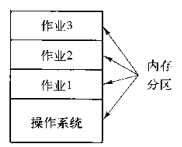
时间上的复用
- 复用的是cpu的时间，指的是cpu在多个内存中的程序之间快速的切换
- 什么情况切换
- 遇到 IO 操作一定会切换
- 没有遇到 IO 操作，也要切换，因为要让cpu能够雨露均沾（Linux操作系统）
一个cpu同一时间只能做一件事
- 并发：多个任务看起来是同时运行的，只有单核也能实现并发
- 并行：多个任务是真正意义上的同时运行的，只能多核才能实现并行
操作系统的安装原理
驱动程序：是硬件厂商专门为自己的某款硬件设备开发的，用于驱动该硬件运行的专项程序（必须遵循操作系统的标准）
安装的操作的核心原理简介：操作系统本质就是一种程序。从大的层面看安装程序的本质就是把这个程序的文件存入硬盘
操作系统的iso包（又称之为操作系统镜像）：iso的本质就是一个压缩包，里面放着一堆操作的代码文件
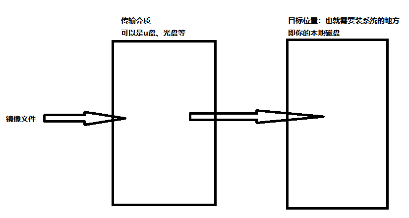
安装原理详解
用另外一台机器从网上下载一个iso镜像包，将该iso包存入移动硬盘、光盘、U盘中—》得到一个启动盘
把启动盘插入你的计算机中（接下来要做的事情，是把启动盘里的操作系统数据拷贝到你自己的电脑的硬盘里）
按下电源键，启动计算机，固定先启动bios程序（basic input output system）
bios启动之后，会根据配置去某些地方加载真正的操作系统代码，bios的配置信息是存放于CMOS中的
找到启动盘后，bios会将启动盘里的操作系统读入内存，然后bios会控制cpu去内存中执行代码，然后真正的操作系统就运行起来
接下来负责掌管硬件运行的就是真正的操作系统了，bios就可以退出舞台
把启动盘里的操作系统拷贝到本地硬盘
操作系统的启动流程
按电源键，通电
先执行bios程序，由bios程序临时接管整个硬件的控制
bios会读取自己的配置项（CMOS），找到一个启动盘（存放有操作系统的硬盘、光盘、移动u盘）
找到启动盘之后，会先读取启动盘的第一个扇区的数据512Byte拉起bootloader程序（前446引导信息，64是分区信息，后2位是结束的标志位）
- 446字节的引导程序又称之为bootloader（grub程序是我们常用的一种bootloader）
bootloader程序启动之后，负责把操作系统后续的代码都加载到内存中，然后运行起来
接下来就由真正的操作系统掌握整个计算机的运行
bios操作会去检查各个驱动程序、硬件是否正常，反馈给真正的操作系统，然后就可以退出舞台
用户空间和内核空间
用户空间：指的是操作系统为用户程序分配的内存区域。每个运行在用户空间的应用程序都有其独立的地址空间，这有助于保护系统免受恶意或错误代码的影响。用户空间的应用程序不能直接访问硬件资源或关键的操作系统数据结构。当程序以用户态运行时，它只能访问属于自己的那部分用户空间内存，而不能直接访问内核空间或其他进程的空间。
内核空间：是操作系统内核使用的内存区域。这里存放了内核代码、设备驱动程序、以及所有需要直接访问硬件资源的数据结构等。内核空间允许直接操作硬件资源和管理整个系统的状态。
二、进程与线程
进程
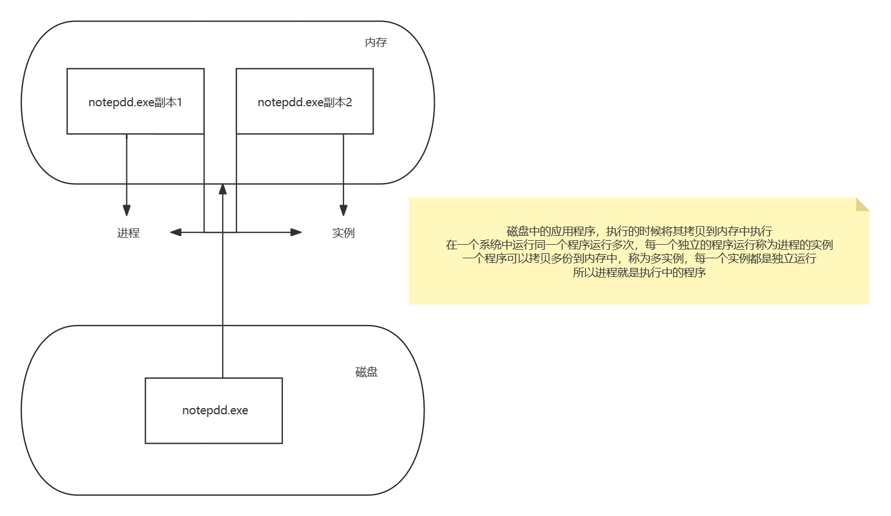
进程：进程是具有一定独立功能的程序在一个数据集上的一次动态执行的过程，是操作系统进行资源分配和调度的一个独立单位，是应用程序运行的载体。可以理解为是程序的实际执行实例，当程序在计算机上运行时，操作系统会为它创建一个进程，分配资源（如内存、CPU时间、文件描述符等），并在计算机上执行程序的指令。
进程分类
操作系统分类
协作式多任务：早期 windows 系统使用，即一个任务得到了 CPU 时间，除非它自己放弃使用CPU，否则将完全霸占 CPU ，所以任务之间需要协作——使用一段时间的 CPU ，主动放弃使用。
抢占式多任务：Linux内核，CPU的总控制权在操作系统手中，操作系统会轮流询问每一个任务是否需要使用 CPU ，需要使用的话就让它用，不过在一定时间后，操作系统会剥夺当前任务的 CPU使用权，把它排在询问队列的最后，再去询问下一个任务。
进程类型
守护进程: daemon，在系统引导过程中启动的进程，和终端无关进程（后台执行，ps aux中TTY为?的）
前台进程：跟终端相关，通过终端启动的进程（占用终端资源）
注意：两者可相互转化
进程资源使用的分类
CPU-Bound：CPU 密集型，非交互
IO-Bound：IO 密集型，交互
进程与进程之间的关系
在操作系统中，不同进程之间可以有多种关系和交互方式。以下是一些常见的进程之间的关系：
父子进程关系：在某些操作系统中，一个进程可以创建其他进程（通过 fork() 系统调用来创建），这些创建的进程被称为子进程，而创建它们的进程称为父进程。子进程通常继承父进程的一些属性，如文件描述符、环境变量等。父子进程之间可以通过进程间通信机制来交换数据和信息。
兄弟进程关系： 兄弟进程是指由同一个父进程创建的多个子进程。这些兄弟进程通常是独立运行的，但它们可以共享某些资源，如父进程创建的文件描述符或共享内存区域。
并发进程关系： 并发进程是指在系统中同时运行的多个独立进程，它们可以在不同的处理器核心（比如多核服务器）上并行执行，以提高系统性能。
竞争条件和同步关系： 当多个进程试图同时访问共享资源时，可能会发生竞争条件。为了避免数据损坏和不一致性，需要使用同步机制来确保进程之间的顺序执行或互斥访问共享资源。
进程间通信关系： 进程之间可以通过进程间通信（Inter-Process Communication，IPC）机制来交换数据和信息。常见的 IPC 方式包括管道、消息队列、信号、套接字、共享内存等。
进程间协作关系： 进程可以协作来完成复杂的任务。这种协作可以通过共享数据、互相通知、等待其他进程完成某些操作等方式来实现。
进程间客户端-服务器关系： 在分布式系统中，进程之间可以扮演客户端和服务器的角色。客户端进程请求服务并与服务器进程通信，以实现分布式应用程序的功能。
进程的状态和转换
状态分类
创建状态：进程在创建时会首先完成资源分配。如果创建工作无法完成，比如资源无法满足，就无法被调度运行。在这个状态下，进程只是被初始化，但尚未分配 CPU 资源。
就绪状态：进程已准备好，已分配到所需资源，只要分配到CPU就能够立即运行，其实就是进入了任务队列，在就绪状态下，进程等待操作系统的调度以获得 CPU 时间片来执行。
运行状态：当操作系统调度进程并将其分配到 CPU 时，进程进入运行状态。在运行状态下，进程将会执行其指令和代码。
阻塞状态：如果一个进程在执行过程中需要等待某些事件（I/O操作完成，申请缓存区失败，等待资源释放）而暂时无法运行，进程受到阻塞。在满足请求时进入就绪状态等待系统调用，在阻塞状态下，进程不会消耗CPU时间，直到等待的事件发生。
终止状态：进程结束，或出现错误，或被系统终止，进入终止状态。无法再执行，在终止状态下，进程的所有资源被释放。
睡眠态：分为两种，可中断：interruptable，不可中断：uninterruptable
- 可中断睡眠态的进程在睡眠状态下等待特定事件发生，即使特定事件没有产生，也可以通过其它手段唤醒该进程，比如，发信号，释放某些资源等
- 不可中断睡眠态的进程在也是在睡眠状态下等待特定事件发生，但其只能被特定事件唤醒，发信号或其它方法都无法唤醒该进程。
停止态：stopped，暂停于内存，但不会被调度，除非手动启动
僵死态：zombie，僵尸态。父进程结束前，子进程关闭，杀死父进程可以关闭僵死态的子进程
状态转换
运行——>就绪
主要是进程占用CPU的时间过长，而系统分配给该进程占用CPU的时间是有限的；在采用抢先式优先级调度算法的系统中,当有更高优先级的进程要运行时，该进程就被迫让出CPU，该进程便由执行状态转变为就绪状态
就绪——>运行
运行的进程的时间片用完，调度就转到就绪队列中选择合适的进程分配CPU
运行——>阻塞
正在执行的进程因发生某等待事件而无法执行，则进程由执行状态变为阻塞状态，如发生了I/O请求
阻塞——>就绪
进程所等待的事件已经结束，就进入就绪队列
以下两种状态是不可能发生的：
- 阻塞——>运行：即使给阻塞进程分配CPU，也无法执行，操作系统在进行调度时不会从阻塞队列进行挑选，而是从就绪队列中选取
- 就绪——>阻塞：就绪态根本就没有执行，谈不上进入阻塞态
总结
活着的状态
运行着的——-》R
- 正在执行：手里拿着cpu正在运行
- 就绪（随时可以投入运行）：正在等待操作系统分配cpu，一旦分配到，就可以立即投入运行
阻塞的—-》S或D
S：可中断的睡眠
- 等待某个资源而进入的状态，执行的IO操作可以得到硬件设备的相应
- 可以用例如ctrl+c, kill -9 pid号命令来终止
D: 不可中断睡眠
执行的IO操作不可以得到硬件设备的相应（可能是因为存储设备太忙了响应不过来了）
因此导致内存中的数据无法及时刷入磁盘，所以不可以被中止（linux系统为了防止数据丢失的一种保护机制）
死了的状态
僵尸进程—–》Z
- 僵尸进程是操作系统的一种优化机制
- 一个进程死掉之后，会把其占用的cpu、内存资源都释放掉，但是会保留该进程的状态信息，例如pid号、存在过的一些运行信息，这些保留下来的信息都是操作系统给父进程准备的
- 每个进程死掉之前都会进入僵尸进程的状态
- 僵尸进程通常由父进程来回收
退出的进程—》X几乎看不到
不可中断睡眠D代表的是，进程正在进行的io，我们可以把进程正在进行的IO操作比喻为进程正在取快递，你是进程，快递员是磁盘，你问快递员把快递给我吧，快递员说我有点忙，你等我去车上取过来给你，你别跑啊，你千万别跑啊，我这就给你去取，我真的是很忙，你要说跑了，我取过来你没有收到，那么我可就不管你了啊，于是你就进入了一个等待的状态，此时无论什么事都不能影响你，更不可能直接被kill干掉，因为一旦发生这件事，快递员取来东西你可就收不到了，这种等待就是不可中断睡眠
可中断睡眠S代表的是，进程就是在原地等待，还是进程”取快递”的例子，你是进程，快递员此时变成了网卡或者是终端的输入操作，你的程序运行到一行代码，等待用户输入才能继续运行，至于用户什么时候输入，不知道，那进程就进入了S状态，你是可以被kill掉的。就好比是你网购完东西后你知道会有快递会送给你，但是什么时候送你根本不知道，那你肯定不必在原地傻等着
僵尸进程和孤儿进程
僵尸进程
子进程已经结束，但父进程可能处于停止状态，未回收其资源导致的状态，所以这个子进程被称为”僵尸”。僵尸进程不占用系统资源，但在系统中存在时，会占用进程号（PID）等资源，影响系统性能。僵尸进程通常发生在子进程已经结束运行
应用程序运行在某个系统上速度特别慢，通过top命令发现系统中有几个僵尸进程存在，问当前问题是否是僵尸进程的锅，我能否直接杀死僵尸进程来解决这个问题，说说你的理由？
僵尸进程不是应用程序变慢的根本原因，僵尸进程已经死了，无法被进一步杀死，kill命令发送信号给进程，但僵尸进程已经被终止不会处理信号。运行速度特别慢应该用top命令查看%wa是否有I/O等待，查看%CPU情况判断是否有进程长期占用cpu，查看%MEM判断是否因内存不足触发频繁交换。
要处理僵尸进程，需要找到僵尸程序的父进程，让父进程去回收这些僵尸进程，如果要杀死僵尸进程，则需要终止父进程，这些僵尸进程会被init进程接管，并由init来负责回收
孤儿进程
指子进程的父进程自己先提前退出或异常终止，导致子进程失去了父进程。这时候，孤儿进程会被操作系统的init进程（通常具有PID 1）接管。init进程会成为孤儿进程的新父进程，负责收养和管理它们。以避免它们变成僵尸进程。
进程之间的通信
==管道（pipe）==
单向传输，只能用于父子进程（有亲缘关系）之间的通信，允许一个进程将数据写入管道，另一个进程从管道中读取数据，随进程的创建而建立，随进程的结束而销毁。
在linux中，管道符“|”主要连接左右两个命令，左侧命令执行时是一个进程，他的标准输出（数据）写入管道，右边命令（进程）从管理读取数据，作为其标准输入
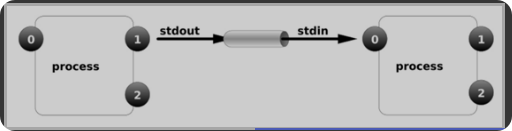
==命名管道（FIFO）==
允许无亲缘关系进程间的通信，不适合进程间频繁地交换数据。
==消息队列（MessageQueue）==
解决了FIFO的缺点。消息队列实际上是链表，链表的每个节点都是一条消息。每一条消息都有自己的消息类型，用整数来表示，而且必须大于 0，但不适合比较大的数据的传输。读取和写入的过程，都会发生用户态与内核态之间的消息拷贝过程。
==共享内存（SharedMemory）==
共享内存就是映射一段能被其他进程所访问的内存，这段共享内存由一个进程创建，但多个进程都可以访问。
每个进程都会维护一个从内存地址到虚拟内存页面之间的映射关系。尽管每个进程都有自己的内存地址，不同的进程可以同时将同一个内存页面映射到自己的地址空间中，从而达到共享内存的目的。
比如a把数据全都丢到共享内存里面，b去共享内存拿数据，而且b可以按需选择拿哪些数据。
==信号（sinal）==
用于通知接收进程某个事件已经发生。
==信号量（Semaphore）==
信号量是一个计数器，可以用来控制多个进程对共享资源的访问。它常作为一种锁机制，防止某进程正在访问共享资源时，其他进程也访问该资源。因此，主要作为进程间以及同一进程内不同线程之间的同步手段。
==套接字（Socket）==
套接字文件，双工通信，网络进程间通信，比如A与B要通信，需要A将数据发生给套接字文件，B从套接字文件接收，或者B发A收。
它既解决了管道只能在相关进程间单向通信的问题，又解决了网络上不同主机之间无法通信的问题。
进程优先级
首先要清楚，Linux 是一个多用户多任务的操作系统，如何理解多用户和多任务？
多用户
- 即 Linux 系统允许多个用户同时访问和使用系统资源，每个用户有自己的用户账户（用于身份验证和授权），且每个用户账户通常有自己的家目录，用于存储个人文件和配置。
多任务
- 多任务是指操作系统能够同时运行多个程序或进程，而不仅仅是一个程序在运行，这使得多个任务可以并发执行。在 Linux 系统中，每个任务通常是一个独立的进程或线程。这些任务可以是用户启动的应用程序、系统服务、后台进程等。所有的任务都放在一个队列中，操作系统通过分时调度算法来分配 CPU 时间片，以便在多个任务之间切换，从而实现并发执行。
- 对于单 CPU 多任务操作系统而言，CPU 通过分配时间片以并发的方式来执行多任务（串行执行——即在某个时间点只能执行一个任务）；而对于多 CPU 多任务操作系统而言，CPU 既可以通过分配时间片以并发的方式来执行多任务，也可以在某个时间点并行执行多个任务，这就是多核 CPU 比单核 CPU 处理性能高的原因。
那在队列中的这些任务谁先会被 CPU 执行呢？是随机的吗？于是就涉及到了进程优先级与 nice 值的相关概念了。在操作系统中，通常存在两种类型的进程优先级：动态优先级和静态优先级。这两种优先级概念用于进程调度和资源分配，但它们有不同的性质和影响。
静态优先级（Static Priority）：
- 静态优先级是在进程创建时分配的，并且在进程的整个生命周期内保持不变。
- 静态优先级通常由用户或程序员明确设置，以反映进程的重要性或性能需求。这通常通过操作系统提供的API或命令来实现。
- 进程的静态优先级在进程的整个生命周期中不会改变，除非明确修改。
动态优先级（Dynamic Priority）：
- 动态优先级是在运行时根据系统负载和其他因素动态调整的优先级。
- 动态优先级的调整可以根据进程的行为、CPU利用率、等待时间等因素进行，以便更好地响应系统的需求。
- 操作系统的调度算法通常会考虑动态优先级来决定哪个进程在给定时刻获得CPU时间。
linux2.6内核将任务优先级进行了一个划分，实时优先级范围是0-99，而普通进程的静态优先级范围是100-139
| 优先级范围 | 描述 |
|---|---|
| 0-99 | 实时进程 |
| 100-139 | 非实时进程 |
CentOS 优先级
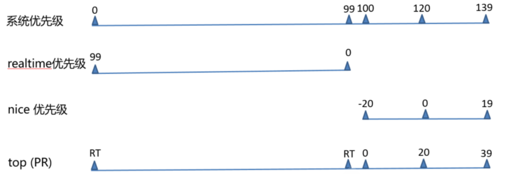
- 系统优先级：0-139, 数字越小，优先级越高,各有140个运行队列和过期队列
- 实时优先级: 99-0 值最大优先级最高
- nice值：-20到19，对应系统优先级100-139
进程切换
操作系统基于多道技术控制着cpu在多个任务/进程之间切换，每种切换对效率的影响是什么？
（1）时间片耗尽 效率影响：公平性高，但频繁切换导致 上下文切换开销增大
（2）进程阻塞 效率影响：提升 CPU 利用率，频繁 I/O 切换可能导致 吞吐量下降
（3）中断处理 效率影响：及时处理外部事件，频繁中断导致用户进程执行时间碎片化
（4）优先级调整 效率影响：关键任务响应及时，但可能打断长任务执行，增加调度延迟
线程
在早期的操作系统中并没有线程的概念，后来，随着计算机的发展，对CPU的要求越来越高，进程之间的切换开销较大，已经无法满足越来越复杂的程序的要求了。于是就发明了线程。
线程是程序执行的最小单位，是进程内的一个执行单元，一个进程可以有一个或多个线程，各个线程之间共享进程的内存空间。
线程的状态和转换
就绪(Ready)：线程能够运行，但在等待被调度。可能线程刚刚创建启动，或刚刚从阻塞中恢复，或者被其他线程抢占
运行(Running) ：线程正在运行
阻塞(Blocked) ：线程等待外部事件发生而无法运行，如I/O等待操作
终止(Terminated)：线程完成，或退出，或被取消
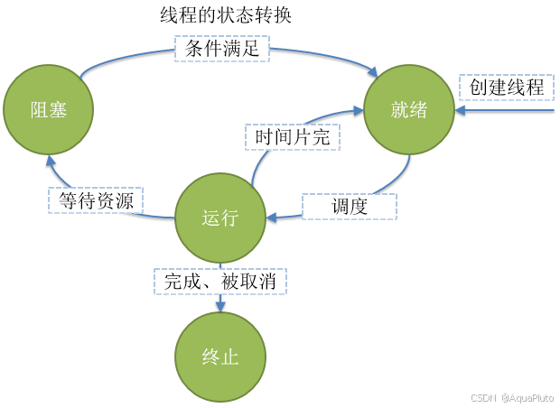
进程与线程的区别
==在概念上==
进程是操作系统分配资源的最小单位；线程是程序执行的最小单位；一个进程由一个或多个线程组成。
==在资源分配上==
进程是独立的资源拥有单位，每个进程都有独立的地址空间和系统资源，某进程内的线程在其它进程不可见；而线程是共享所属进程的资源，多个线程共享同一个地址空间和系统资源，包括内存、文件和其他系统资源。
==在创建和销毁上==
进程的开销通常比线程大，因为进程需要为其分配独立的内存空间和资源；而线程的创建和销毁开销相对较小，因为它们共享了进程的资源。
==在通信上，也是在并发性上==
线程之间的通信和同步相对容易，并发性较高，因为它们共享同一地址空间；而进程之间的通信和同步则需要额外的机制，如管道、消息队列等，并发性较低，因为它们通常是相互独立的。
多进程和多线程
多进程：多进程是指在一个应用程序中同时运行多个进程，每个进程都有独立的地址空间和资源，可以较充分地利用多处理器。
多线程：顾名思义，多个线程，一个进程中如果有多个线程运行，就是多线程，实现一种并发。
并行和并发
并行：指的是多个任务真正地在同一时刻执行，通常需要多个处理器核心来实现。
并发：指的是多个任务在同一时间段内交替执行，但并不一定是同时执行。操作系统通过时间片轮转等调度机制使得多个任务看起来像是同时进行的。
单核CPU：无论是多进程还是多线程，都是通过时间片轮转的方式实现并发，不能实现真正的并行执行。
多核CPU：可以实现真正的并行执行，即多个进程或线程可以在不同的核心上同时执行，从而提高系统的性能和效率。
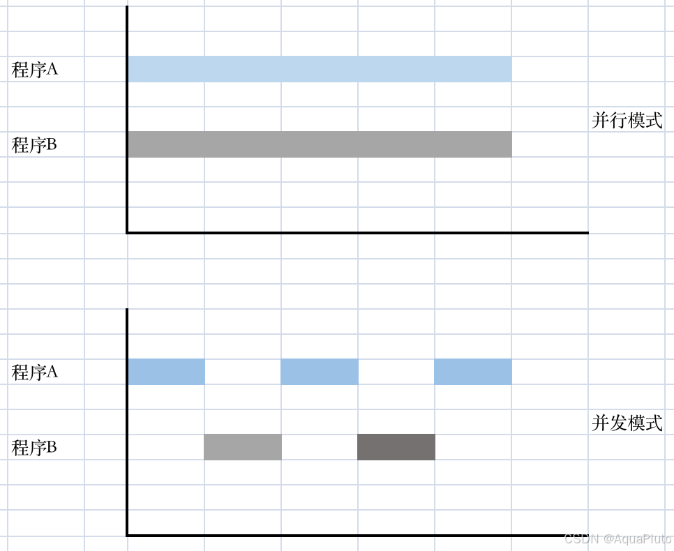
python中的GIL锁
GIL 保证CPython进程中，只有一个线程执行字节码。甚至是在多核CPU的情况下，也只允许同时只能有一个CPU核心上运行该进程的一个线程。所以python中的多线程是假并行。
CPU密集型和IO密集型
CPU密集型任务：
- 指那些需要大量CPU计算时间的任务，例如视频编码、图像处理、科学计算等。这类任务主要消耗的是CPU资源。
- 适用模型：多进程
- 因为其主要依赖于CPU计算能力，用多进程可以充分利用多核CPU的优势，实现真正的并行计算；而使用多线程可能不会带来显著的性能提升，因为在Python中有GIL（全局解释器锁）。
IO密集型任务：
- 指那些花费大量时间等待外部资源响应的任务，例如读写文件、网络请求、数据库查询等。这类任务大部分时间都在等待I/O操作完成，而非占用CPU资源。
- 适用模型：多线程或多协程
- 当一个线程执行 I/O 操作（如网络请求、文件读写等）时，CPython 会检测到这是一个 I/O 操作，并允许该线程暂时释放 GIL。这使得其他线程有机会获取 GIL 并执行它们的 Python 字节码。一旦 I/O 操作完成，线程重新获取 GIL 并继续执行后续代码。这种机制对于 I/O 密集型任务非常重要，因为它允许在等待 I/O 的时候让出 CPU 给其他线程使用，从而提高程序的整体效率和响应速度。
协程
是一种用户级别的轻量级线程，由程序员显式控制其执行流程。协程可以在特定点暂停（yield），然后在之后恢复执行，而且无需内核态与用户态之间的转换，这使得它非常适合于异步编程模型。例如可以使用Python中的asyncio模块来实现。
三、IO模型
IO的分类
磁盘IO和网络IO
磁盘I/O处理过程
- 进程向内核发起系统调用，请求磁盘上的某个资源比如是html 文件或者图片
- 然后内核通过相应的驱动程序将目标文件加载到内核的内存空间
- 加载完成之后把数据从内核内存再复制给进程内存，如果是比较大的数据也需要等待时间。
网络I/O 处理过程
- 获取请求数据，客户端与服务器建立连接发出请求，服务器接受请求
- 构建响应，当服务器接收完请求，并在用户空间处理客户端的请求，直到构建响应完成
- 返回数据，服务器将已构建好的响应再通过内核空间的网络 I/O 发还给客户端
不论磁盘和网络I/O，每次I/O，都要经由两个阶段：
- 第一步：将数据从文件先加载至内核内存空间（缓冲区），等待数据准备完成，时间较长
- 第二步：将数据从内核缓冲区复制到用户空间的进程的内存中，时间较短
同步IO和异步IO
函数或方法被调用的时候，调用者是否得到最终结果的。
直接得到最终结果结果的，就是同步调用；
不直接得到最终结果的，就是异步调用。
阻塞IO和非阻塞IO
函数或方法调用的时候，是否立刻返回。
立即返回就是非阻塞调用；
不立即返回就是阻塞调用。
阻塞I/O (Blocking I/O)
当一个进程发起一个I/O请求时，它会暂停执行，直到I/O操作完成。
这是最常见的I/O模型，例如当你打开一个文件进行读取时。
非阻塞I/O (Non-blocking I/O)
在非阻塞模式下，当进程尝试发起I/O操作时，如果操作不能立即完成，则会立即返回一个错误或特定值，而不是等待。
进程需要不断地轮询检查I/O操作的状态，这称为“忙等”(busy-waiting)。
联系
同步阻塞，我啥事不干，就等你打饭打给我。打到饭是结果，而且我啥事不干一直等，同步加阻塞。
同步非阻塞，我等着你打饭给我，饭没好，我不等，但是我无事可做，反复看饭好了没有。打饭是结果，但是我不一直等。
异步阻塞，我要打饭，你说等叫号，并没有返回饭给我，我啥事不干，就干等着饭好了你叫我。例如，取了号什么不干就等叫自己的号。
异步非阻塞，我要打饭，你给我号，你说等叫号，并没有返回饭给我，我去看电视、玩手机，饭打好了叫我。
总结
同步与异步：任务的启动/调用方式
- 同步：多个任务是同步执行的指的是启动一个任务之后，必须在原地等待该任务运行完毕之后，才能启动下一个任务并且运行
- 异步：提交完一个任务之后，不用在原地等待该任务运行完毕，就能立即提交下一个任务执行
并发/并行与串行：指的是任务给人展现出的运行的效果
- 并发/并行：多个任务是”同时“运行的
- 串行：一个任务运行完毕，才能运行下一个
阻塞与非阻塞：任务在操作系统中的运行状态
- 会引起阻塞的事项
- 硬盘IO
- 网络IO
- sleep
- read命令
同步IO模型
阻塞IO模型
进程等待（阻塞），直到读写完成。（全程等待）
read() write() recv() send() accept() connect() 等…都是阻塞IO
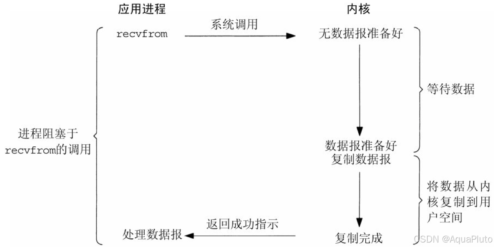
当用户调用了read()，kernel 就开始了IO的第一个阶段：准备数据。对于网络IO来说，很多时候数据在一开始还没有达到（比如，还没有收到一个完整的数据包），这个时候kernel 就要等待足够的数据到来。而在用户进程这边，整个进程会被阻塞。当kernel 一直等到数据准备好了，它就会将数据从kernel中拷贝到用户内存，然后kernel返回结果，用户进程才解除block的状态，重新运行起来
所以，阻塞IO的特点就是在IO执行的两个阶段（等待数据和拷贝数据两个阶段）都被阻塞了。这导致用户在发起IO请求时，不能做任何事情，对CPU的资源利用率不够
非阻塞IO模型
进程调用recvfrom操作，如果IO设备没有准备好，立即返回ERROR，进程不阻塞。用户可以再次发起系统调用（可以轮询），如果内核已经准备好，就阻塞，然后复制数据到用户空间。可防止进程阻塞在IO操作上，需要轮询。
第一阶段数据没有准备好，可以先忙别的，等会再来看看。检查数据是否准备好了的过程是非阻塞的。
第二阶段是阻塞的，即内核空间和用户空间之间复制数据是阻塞的。
淘米、蒸饭我不阻塞等，反复来询问，一直没有拿到饭。盛饭过程我等着你装好饭，但是要等到盛好饭才算完事，这是同步的，结果就是盛好饭。
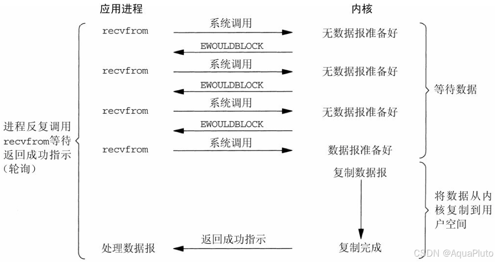
所以，在非阻塞式 IO 中，用户进程其实是需要不断的主动询问（轮询） kernel 数据准备好了没有。 轮询的时间不好把握，这里是要猜多久之后数据才能到。等待时间设的太长，程序响应延迟就过大；设的太短，就会造成过于频繁的重试，干耗CPU而已，是比较浪费CPU的方式。
多路复用IO模型
以前一个应用程序需要对多个网络连接进行处理，传统的方法是使用多线程或多进程模型，为每个连接创建一个线程或进程进行处理。这种方法存在一些问题，例如线程或进程的创建和销毁需要消耗大量的系统资源，且容易导致线程或进程的数量过多，进而导致系统崩溃或运行缓慢。所以便出现了IO多路复用。
多路复用思想是将操作的所有文件描述符保存在一张文件描述符表中，然后将文件描述符表交给内核，让内核检测当前是否有准备就绪的文件描述符（例如有数据可读或可写），如果有则通知应用程序，操作就绪的文件描述符。这种方式可以让一个进程处理多个并发的IO操作，而不需要为每个IO操作创建一个独立的线程或进程。
以select为例，当用户进程调用了select，那么整个进程会被block，而同时，kernel会“监视”所有select负责的socket，当任何一个socket中的数据准备好了，select就会返回。这个时候用户进程再调用read操作，将数据从kernel拷贝到用户进程。
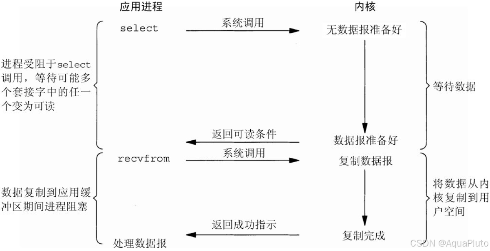
相比非阻塞IO
- 在非阻塞IO模型中，如果一个文件描述符还没有准备好进行读写操作，应用程序需要不断地轮询该描述符的状态（即不断调用
read()或write()）。这会导致较高的CPU使用率，因为即使在没有数据的情况下，程序也需要不断地执行这些系统调用。 - 相比之下，使用IO多路复用（如
select(), poll(), 或epoll()），程序只需要在一个调用中指定多个文件描述符，然后等待至少有一个描述符准备就绪。这减少了CPU的轮询开销。
select
这是最早的多路复用函数之一，它可以监控多个文件描述符，并且在任何一个描述符上有事件发生时返回。但是它的最大限制是文件描述符的数量受限于系统定义的最大值。
通过将已连接的Socket放入一个文件描述符集合中，然后调用select函数将文件描述符集合拷贝到内核里，让内核来检查是否有网络事件产生。然而，select存在一些缺点，如每次调用select都需要将fd集合从用户态拷贝到内核态，且仅仅返回可读文件描述符的个数，具体哪个可读还需要用户自己以轮询的方式线性扫描，效率不高。
poll
与select()类似，但没有文件描述符数量的限制。poll()使用链表来跟踪描述符的状态变化。
修复了select的一些问题，不再使用BitsMap来存储所关注的文件描述符，改用动态数组，以链表形式来组织，突破了select的文件描述符个数限制。然而，poll和select并没有太大的本质区别，都是使用线性结构存储进程关注的Socket集合，因此都需要遍历文件描述符集合来找到可读或可写的Socket。
epoll
这是Linux系统提供的一个更为高效的多路复用接口，它可以高效地处理大量的文件描述符。epoll使用事件驱动的方式，只有当事件发生时才会通知应用程序。
它针对select和poll的缺点进行了优化。epoll在内核中保存一份文件描述符集合，无需用户每次都重新传入，只需告诉内核修改的部分。内核不再通过轮询的方式找到就绪的文件描述符，而是通过异步I0事件唤醒。这使得epoll在处理大量并发连接时具有更高的性能和效率。
信息驱动IO模型
进程在IO访问时，先通过sigaction系统调用，提交一个信号处理函数，立即返回，进程不阻塞。当内核准备好数据后，产生一个SIGIO信号并投递给信号处理函数（由内核通知，发送信号）。可以在此函数中调用recvfrom函数操作数据从内核空间复制到用户空间，这段过程进程阻塞。
此模型的优势在于等待数据报到达期间进程不被阻塞。用户主程序可以继续执行，只要等待来自信号处理函数的通知。但是信号 I/O 在大量 IO 操作时可能会因为信号队列溢出导致没法通知。
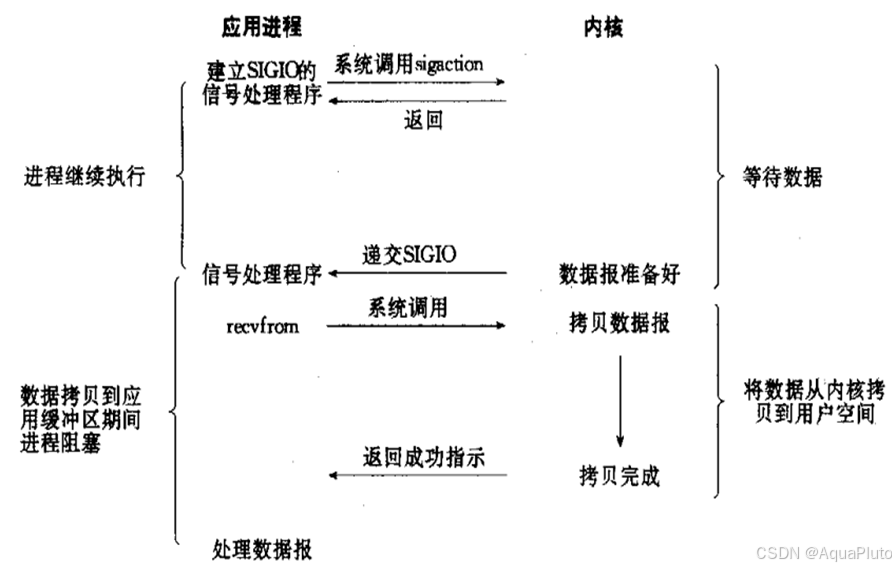
异步IO模型
进程发起异步IO请求，立即返回。内核完成IO的两个阶段，内核给进程发一个信号。异步I/O允许进程发起一个I/O操作后继续执行其他任务，当I/O操作完成时，操作系统会通知进程。所以IO两个阶段，进程都是非阻塞的。
异步I/O 与 信号驱动I/O最大区别在于，信号驱动是内核通知用户进程何时开始一个I/O操作，而异步I/O是由内核通知用户进程I/O操作何时完成。
但是Linux的 aio 的系统调用，内核是从版本2.6开始支持，只用在磁盘IO读写操作，不用于网络IO。
IO模型总结
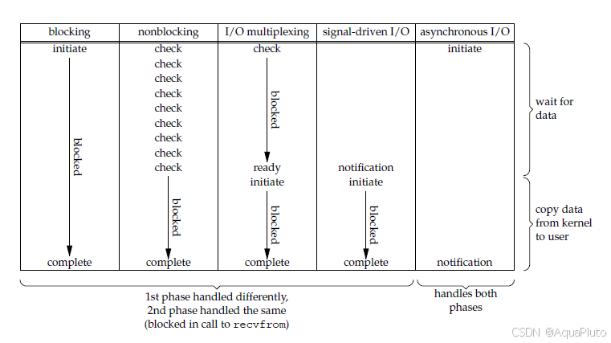